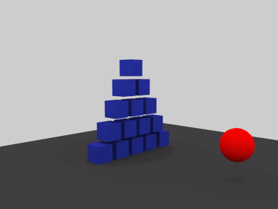

|
The rigid body tag is used to mark a polygon object as a rigid
body for Dynamics
(Physical) simulations.

A rigid body simulation.
- If you have many objects with the same rigid body properties
you can put all these objects into the same folder and assign
the rigid body tag to the folder.
Attention: You can only add rigid body tags to polygon,
particle and folder objects.
Properties
- Type: Specifies the rigid body type. A rigid
body can be one of the following types:
- Static: Static objects are non-moving
objects. But dynamic (moving) objects can collide with them.
Static objects are used for ground planes for example.
- Dynamic: Dynamic objects interact with other
rigid bodies and are influenced by forces and collisions.
- Kinematic: Kinematic objects are objects
which are animated via F-Curves but which interact / collide
with dynamic objects. This rigid body type could be used to
animate a racket which hits a ball.
- Shape: Specifies the collision shape of the
rigid body.
- Bounding Box: The bounding box will be used
as the collision shape.
- Convex: Use this collision shape for all
type of convex objects. If possible Cheetah3D uses special
optimized collision primitives for balls, boxes, capsules
and cylinders which require less memory and are faster. If a
convex object can be represented by an optimized collision
shape Cheetah3D will use a convex hull.
- Convex hull: The convex hull of the rigid
body will be used as collision shape.
- Concave: The actual mesh of the rigid body
will be used for the collision shape. This is the most
generally applicable collision shape since it also works
with concave objects like a torus but it is also the
slowest. So only use it if necessary.
- Mass: Specifies the mass of the rigid body. The
center of mass is always in the object's pivot point.
- Friction: Specifies how strong an object is
influenced by frictional forces between two objects.
- Elasticity: Specifies the elasticity of the
rigid body.
- Damping: Specifies how strong the linear
movement of an object is damped. The higher the damping value
the faster a object slows down.
- Angular damping: Specifies how strong the
angular movement of an object is damped.
- Margin: The margin adds some additional
collision tolerance to the collision shape. This helps to get
more stable simulation results. The margin should never be zero.
- Velocity: Specifies the initial linear velocity
of an object in the global coordinate system.
- Angular velocity: Specifies the initial angular
velocity of an object in the global coordinate system.
- Activate:
- Immediately: Dynamic objects are active
from the very beginning of the animation at time t=0.
- Collision: Dynamic objects are static until
another object collides with them with at a certain min.
speed.
- Time: Dynamic objects are static until time
t=Time.
- Time: Specifies when a dynamic rigid body
becomes active.
- Min. speed: Specifies the min. speed of a
colliding object to activate this rigid body.
- Forces On/Off: Specifies if this rigid body can
be influenced by Force
objects.
- Linear factor: The linear forces acting on the
rigid body are multiplied by this factor.
- Angular factor: The angular forces acting on the
rigid body are multiplied by this factor.
|